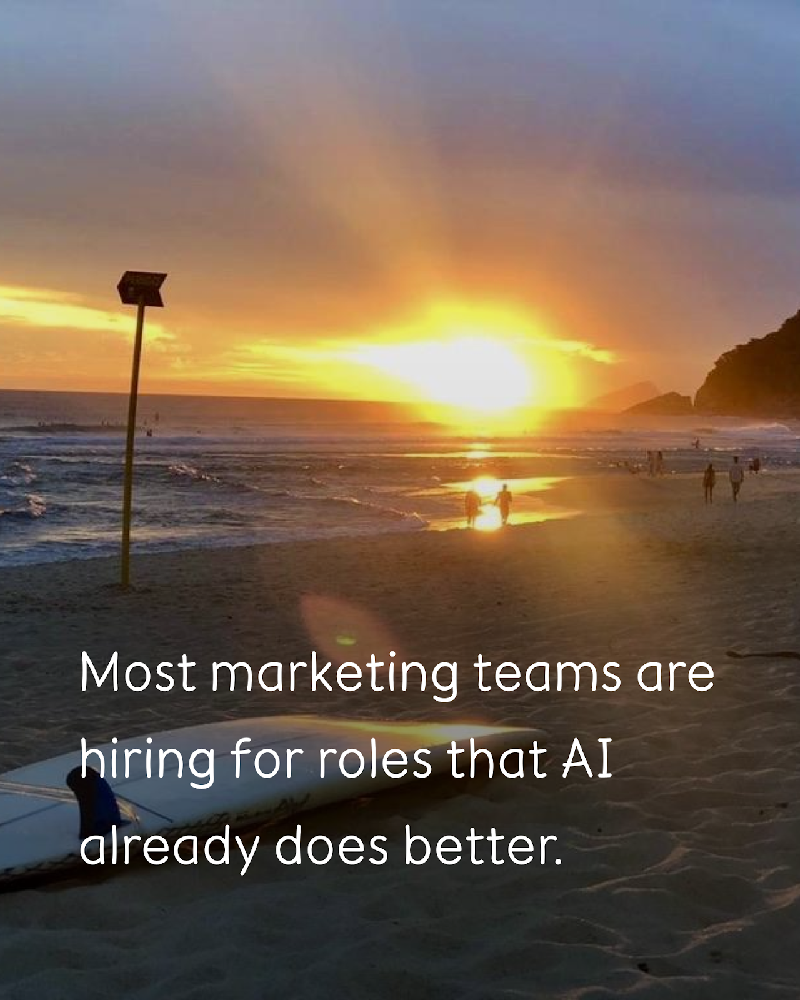
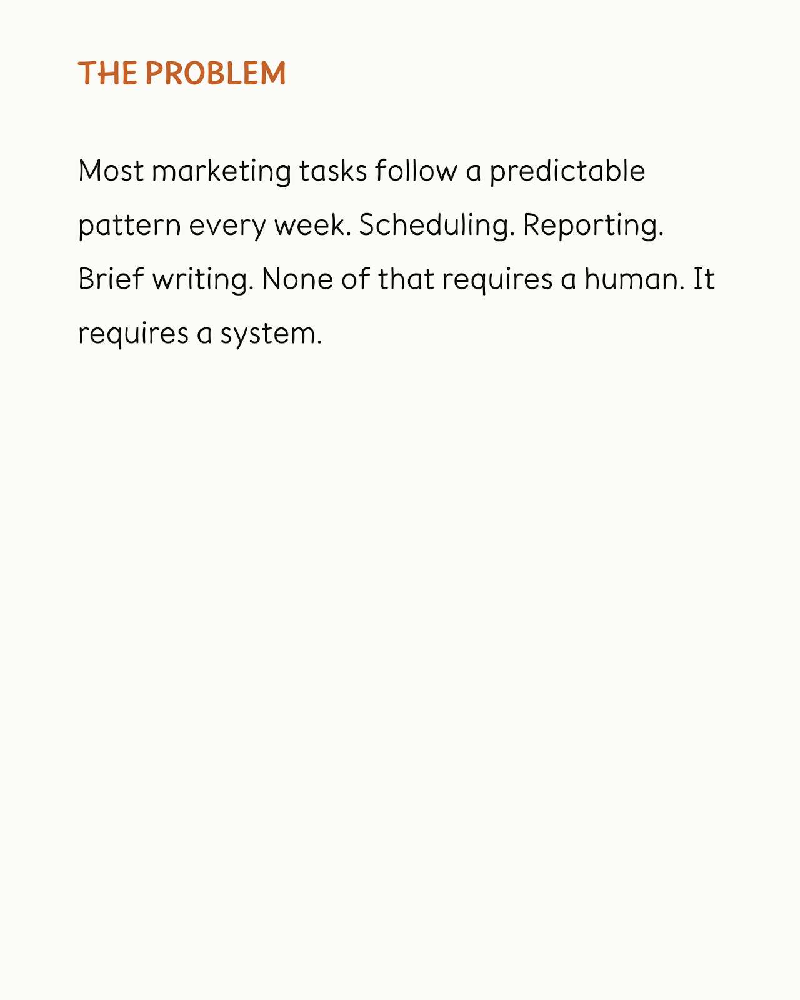
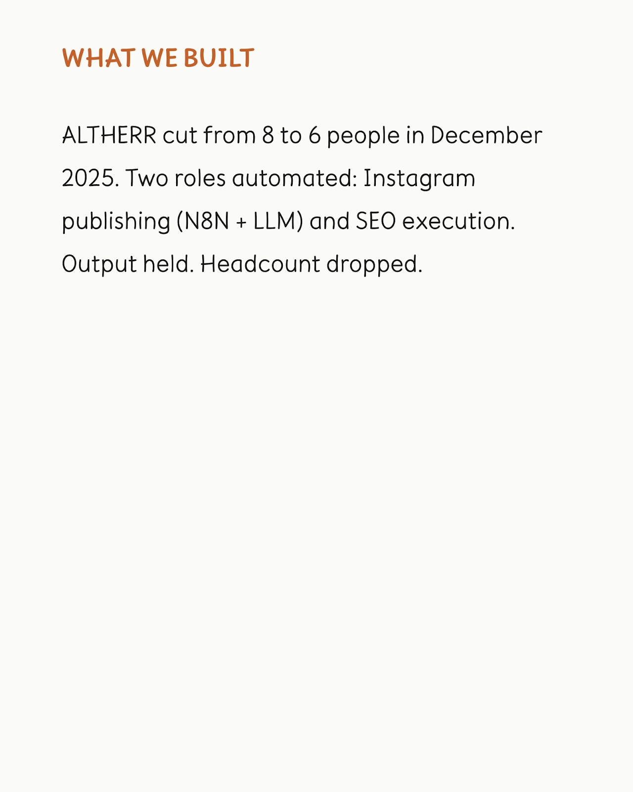
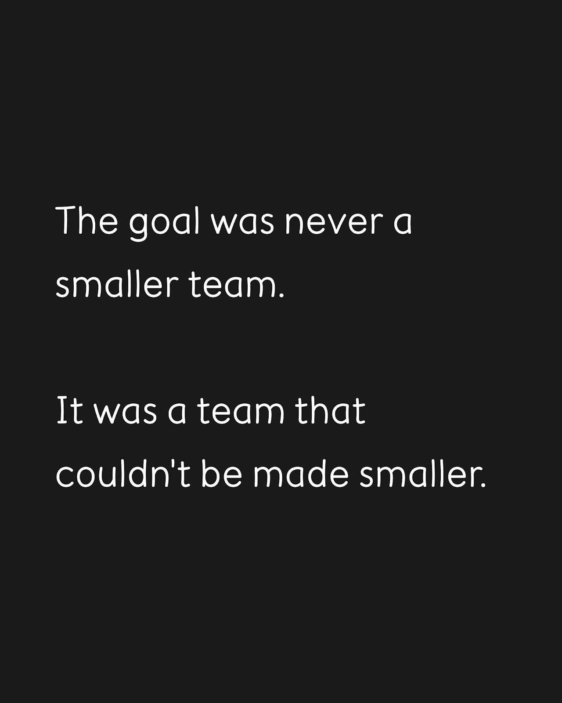
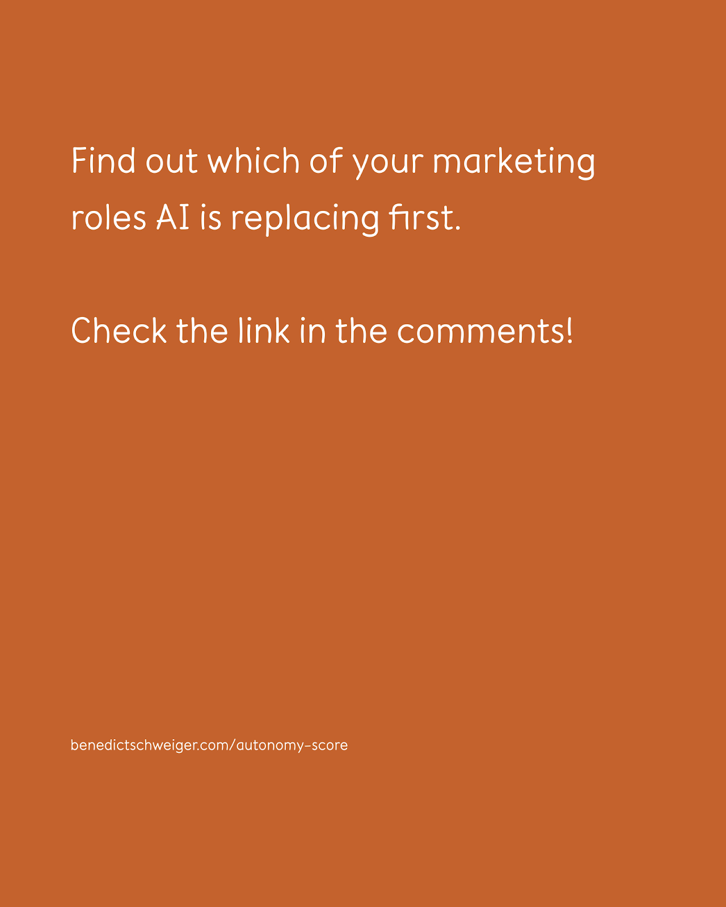

LinkedIn Preview
 + Follow
+ Follow
The question is not whether AI can do the job. It is whether the job deserves a human.
We asked that at ALTHERR for every role on the team. Most answers were uncomfortable.
Instagram publishing: a hygiene channel. We needed it consistent, not creative. An N8N workflow with an LLM handles it now. Setup was one week. That role did not get refilled when we restructured.
SEO execution: one strategist with AI tooling does what two people did before. Not because the work matters less, but because most of it is pattern recognition, and models are built for pattern recognition.
We also tried what did not work. HeyGen for AI-generated video avatars. The output was technically fine. Viewers noticed immediately. Trust is expensive to rebuild, so we stopped after two weeks.
That failure taught us the distinction that matters: tasks that can be evaluated by outputs are agent candidates. Tasks where quality depends on judgment about the brand, the customer, or the moment stay with humans.
Eight people became six. Output held. The six do more valuable work than the eight did.
Most marketing orgs are still structured around a problem that no longer exists: good marketing requires a lot of human labour. It does not. It requires a few people who can design and oversee systems, and agents that can execute.
If you want to see which of your tasks are agent candidates, the Autonomy Score diagnostic maps your marketing setup across five dimensions in three minutes. benedictschweiger.com/autonomy-score





Instagram Preview
benedictschweiger
benedictschweiger We cut from 8 to 6 people at ALTHERR last December.
Not by cutting output. By asking one question for every role: does this task require a human, or does it require a system?
Instagram publishing: system. One week of setup with N8N and an LLM. Done.
SEO execution: one person with AI tools does what two did before.
Video avatars via HeyGen: tried it, failed. Viewers notice. Trust costs too much. Stopped after two weeks.
The line that matters: tasks with measurable outputs belong to agents. Tasks that need judgment about the brand or customer stay with people.
Six doing the work of eight, but better work.
Which of your marketing tasks are agent candidates? Link in bio to find out.
#agenticmarketing #marketingautomation #aimarketing #marketingstrategy #marketingops #futureofwork #contentmarketing #smallteam
View all 0 comments